Chapter 5 Nonlinear Bayesian Models in R
(Same set up code as Chapter 3):
Asymptotic sigmoidal curve expected for product performance over time. Eventually, given enough time, the product has to stop working, and \(\beta_1\) goes to 0 as t goes to 0.
5.1 Generalized Logistic Curve
Adapted from: https://en.wikipedia.org/wiki/Generalised_logistic_function
\[ \beta(t) = A + \frac{(K - A)}{(1 + e^{-B(t-M)})^{1/v}} \] where,
\(A\) is the left horizontal asymptote,
\(K\) is the right horizontal asymptote (\(K = 0\) in our models),
\(B\) is the growth rate (\(B>0\); \(B<0\) is a decay rate),
\(v\) affects where the inflection point occurs, and
\(M\) relates to the starting time of when the curve begins.
## [1] 148.4132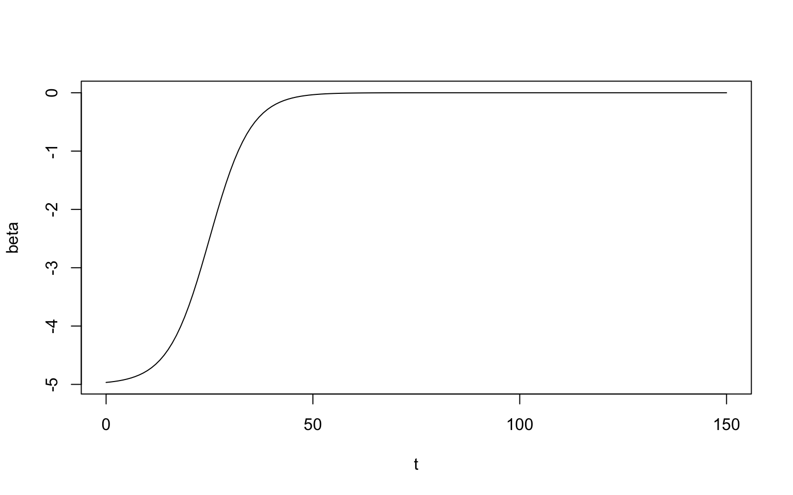
See the shiny app to play around with how the parameter values affect the curve. This will be helpful in understanding the model and setting priors for the model.
5.2 Bayesian model
\[ y_{ijk} \sim NegBinom(\lambda_{ijk}, r) \\ log(\lambda_{ikt} ) = \beta_0 + \beta_{1,t} x_{A,i} + \gamma_{k} x_{ik} + GP_{ijk} + \mbox{ln} \left(DaysOfCatch_i\right) \\ \beta_{1,t} = A_k \left(1 - \frac{1}{(1 + e^{-B(t-M)})^{1/v}}\right) \\ \gamma_k \sim Normal(0, \sigma_{\gamma}) \\ \mathbf{GP_k} \sim MVN(0, \boldsymbol\Sigma_k) \\ \beta_0 \sim Normal(0, 2) \\ A_k \sim HalfNormal(0, 2) \\ \sigma_{\gamma} \sim HalfCauchy(0, 1) \\ r \sim HalfCauchy(0,1) \\ B \sim HalfNormal(0.5) \\ M \sim Uniform(0, 150) \\ \sigma_{k, lm} = \tau_k \cdot e^{-\frac{|d_l - d_m|^2}{l_k^2}} \\ \tau_k \sim HalfCauchy(0, 1) \\ l_k \sim HalfCauchy(0, 1) \\ \]
where, in addition to the variables and parameters defined for the GLM, we have
\(k = 1,..., K=10\) represents the locations,
\(j = 1, ..., J = 117\) represents the 117 unique date-location combinations,
\(y_{ikj}\) is moth count \(i\) from location \(k\) on date \(j\),
\(\lambda_{ikj}\) is the expected moth count for sample \(i\) from location \(k\) on date \(j\),
\(\beta_0\) is the expected moth count for our control treatment for a new location,
\(\beta_{1,t}\) is the expected difference in moth counts between the control group and the treatment A group for a new location at \(t\) days from the installation,
\(A_k\) is the maximum trapping reduction (represented by the max coefficient value) associated with locaiton \(k\),
\(\gamma_{0k}\) is the random intercept associated with location \(k\), which leads to different background moth pressures at each location. All \(\gamma_{0k}\) come from an iid Normal distribution,
\(\gamma_{1k}\) is the random slope associated with location \(k\), which leads to different treatment effects at each location. All \(\gamma_{1k}\) come from an iid Normal distribution,
\(x_{ik}\) is an indicator variable that equals 1 if moth count \(i\) is associated with location \(k\) and 0 otherwise,
\(\gamma_{00j}\) is the random intercept associated with date-location \(j\), which leads to different background moth pressures for each date, and
\(x_{ij}\) is an indicator variable that equals 1 if moth count \(i\) is associated with date-location \(j\) and 0 otherwise.
\(l\) = lscale (differnt for each location)
\(\phi\) = sdgp
For now, we assume that each location shares all of the same non-linear parameters except for \(A\), the maximum trapping reduction level. For now, we also set \(v=1\).
5.3 Fitting models with the brms package
Setting priors in a nonlinear model is non-trivial!!
5.3.1 no RE, no GP
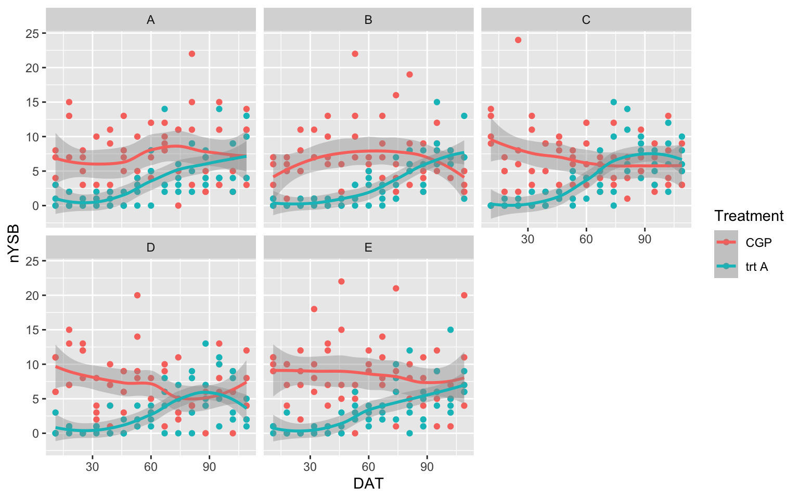
## Family: negbinomial
## Links: mu = log; shape = identity
## Formula: nYSB ~ b0 - (A * (1 - 1/(1 + exp(-1 * B * (DAT - M))))) * numTrt + log(DaysOfCatch)
## b0 ~ 1
## A ~ 1
## B ~ 1
## M ~ 1
## Data: simdata1 (Number of observations: 600)
## Draws: 6 chains, each with iter = 2000; warmup = 1000; thin = 1;
## total post-warmup draws = 6000
##
## Regression Coefficients:
## Estimate Est.Error l-95% CI u-95% CI Rhat Bulk_ESS Tail_ESS
## b0_Intercept 1.96 0.03 1.90 2.02 1.00 4118 3583
## A_Intercept 2.90 0.26 2.46 3.49 1.00 2584 2722
## B_Intercept 0.11 0.02 0.08 0.16 1.00 2473 2869
## M_Intercept 49.60 2.78 43.55 54.19 1.00 2643 2604
##
## Further Distributional Parameters:
## Estimate Est.Error l-95% CI u-95% CI Rhat Bulk_ESS Tail_ESS
## shape 4.94 0.58 3.90 6.17 1.00 3977 3655
##
## Draws were sampled using sampling(NUTS). For each parameter, Bulk_ESS
## and Tail_ESS are effective sample size measures, and Rhat is the potential
## scale reduction factor on split chains (at convergence, Rhat = 1).## prior class coef group resp dpar nlpar lb ub source
## normal(0, 2) b A 0 user
## normal(0, 2) b Intercept A 0 (vectorized)
## normal(0, 0.5) b B 0 user
## normal(0, 0.5) b Intercept B 0 (vectorized)
## normal(0, 2) b b0 user
## normal(0, 2) b Intercept b0 (vectorized)
## uniform(0, 120) b M 0 120 user
## uniform(0, 120) b Intercept M 0 120 (vectorized)
## cauchy(0, 1) shape 0 user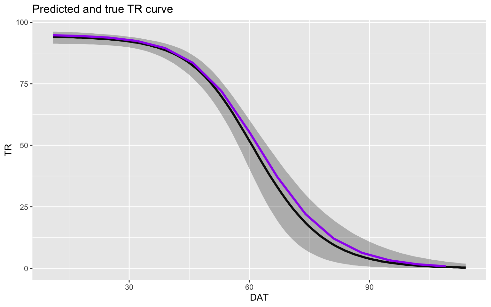
5.3.2 intercept RE, no GP
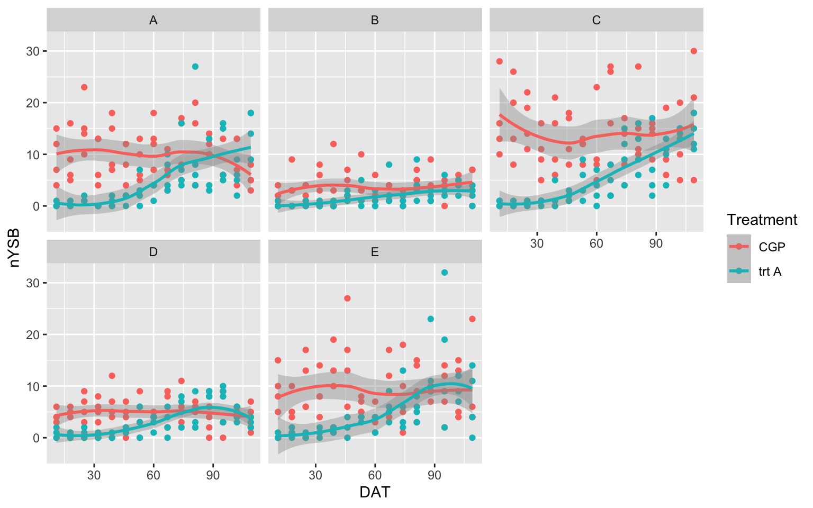
## Family: poisson
## Links: mu = log
## Formula: nYSB ~ b0 - (A * (1 - 1/(1 + exp(-1 * B * (DAT - M))))) * numTrt + log(DaysOfCatch)
## b0 ~ 1 + (1 | Location)
## A ~ 1
## B ~ 1
## M ~ 1
## Data: simdata (Number of observations: 600)
## Draws: 6 chains, each with iter = 2000; warmup = 1000; thin = 1;
## total post-warmup draws = 6000
##
## Multilevel Hyperparameters:
## ~Location (Number of levels: 5)
## Estimate Est.Error l-95% CI u-95% CI Rhat Bulk_ESS Tail_ESS
## sd(b0_Intercept) 0.74 0.34 0.34 1.67 1.00 1430 1807
##
## Regression Coefficients:
## Estimate Est.Error l-95% CI u-95% CI Rhat Bulk_ESS Tail_ESS
## b0_Intercept 1.95 0.34 1.22 2.64 1.00 1411 1704
## A_Intercept 3.30 0.31 2.79 4.00 1.00 2574 2714
## B_Intercept 0.08 0.01 0.07 0.10 1.00 2687 2964
## M_Intercept 46.91 3.06 40.23 52.27 1.00 2604 2493
##
## Draws were sampled using sampling(NUTS). For each parameter, Bulk_ESS
## and Tail_ESS are effective sample size measures, and Rhat is the potential
## scale reduction factor on split chains (at convergence, Rhat = 1).## # A tibble: 5 × 2
## Parameter med
## <fct> <dbl>
## 1 r_Location__b0[A,Intercept] 2.30
## 2 r_Location__b0[B,Intercept] 1.29
## 3 r_Location__b0[C,Intercept] 2.58
## 4 r_Location__b0[D,Intercept] 1.68
## 5 r_Location__b0[E,Intercept] 2.26## [1] 2.29 1.29 2.54 1.71 2.13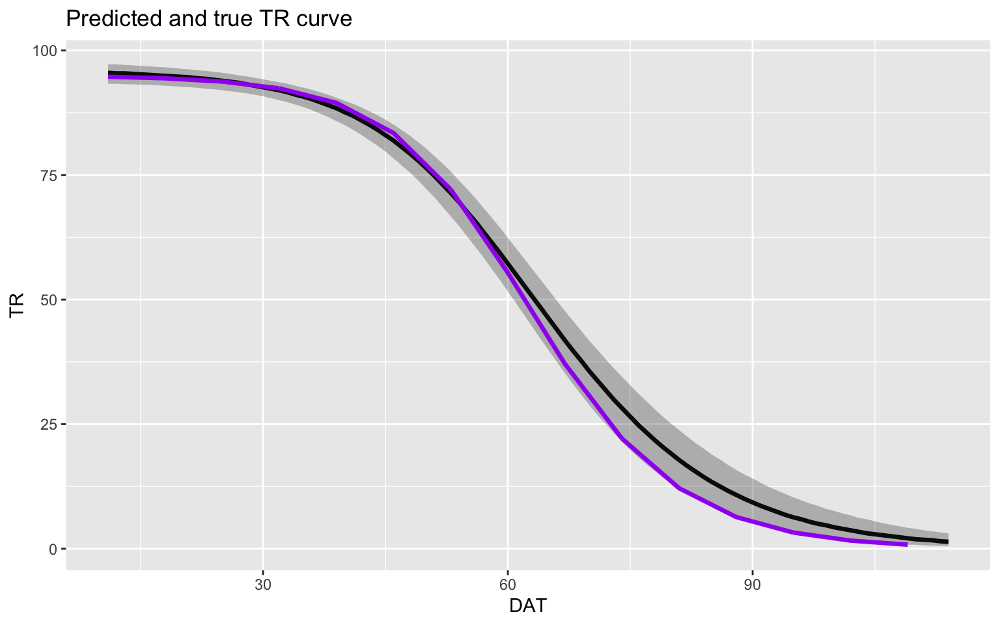
5.3.3 intercept RE, A RE, no GP
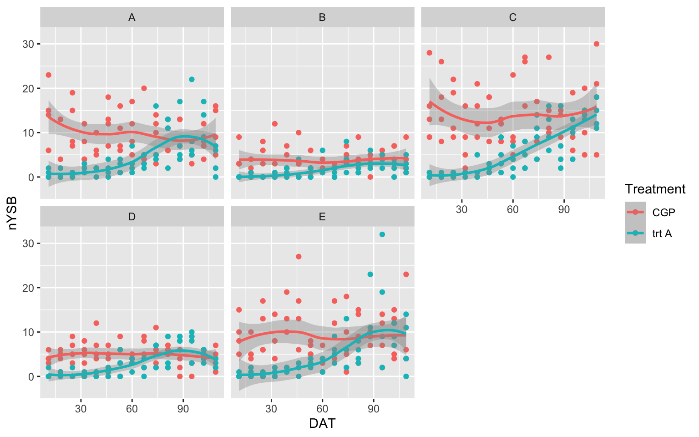
## Family: negbinomial
## Links: mu = log; shape = identity
## Formula: nYSB ~ b0 - (A * (1 - 1/(1 + exp(-1 * B * (DAT - M))))) * numTrt + log(DaysOfCatch)
## b0 ~ 1 + (1 | Location)
## A ~ 1 + (1 | Location)
## B ~ 1
## M ~ 1
## Data: simdata3 (Number of observations: 600)
## Draws: 6 chains, each with iter = 2000; warmup = 1000; thin = 1;
## total post-warmup draws = 6000
##
## Multilevel Hyperparameters:
## ~Location (Number of levels: 5)
## Estimate Est.Error l-95% CI u-95% CI Rhat Bulk_ESS Tail_ESS
## sd(b0_Intercept) 0.75 0.37 0.33 1.74 1.00 1560 1660
## sd(A_Intercept) 0.41 0.39 0.01 1.40 1.00 1626 1934
##
## Regression Coefficients:
## Estimate Est.Error l-95% CI u-95% CI Rhat Bulk_ESS Tail_ESS
## b0_Intercept 1.97 0.38 1.19 2.69 1.00 1273 1713
## A_Intercept 3.32 0.47 2.54 4.33 1.00 2596 2481
## B_Intercept 0.08 0.01 0.06 0.10 1.00 3209 2929
## M_Intercept 46.20 4.45 36.25 53.58 1.00 2930 2218
##
## Further Distributional Parameters:
## Estimate Est.Error l-95% CI u-95% CI Rhat Bulk_ESS Tail_ESS
## shape 5.10 0.59 4.08 6.39 1.00 7516 4014
##
## Draws were sampled using sampling(NUTS). For each parameter, Bulk_ESS
## and Tail_ESS are effective sample size measures, and Rhat is the potential
## scale reduction factor on split chains (at convergence, Rhat = 1).## # A tibble: 5 × 2
## Parameter med
## <fct> <dbl>
## 1 r_Location__b0[A,Intercept] 2.26
## 2 r_Location__b0[B,Intercept] 1.32
## 3 r_Location__b0[C,Intercept] 2.58
## 4 r_Location__b0[D,Intercept] 1.68
## 5 r_Location__b0[E,Intercept] 2.26## [1] 2.29 1.29 2.54 1.71 2.13## # A tibble: 5 × 3
## Parameter meddiff med
## <fct> <dbl> <dbl>
## 1 r_Location__A[A,Intercept] -0.0441 3.23
## 2 r_Location__A[B,Intercept] 0.0301 3.30
## 3 r_Location__A[C,Intercept] 0.206 3.48
## 4 r_Location__A[D,Intercept] -0.0896 3.18
## 5 r_Location__A[E,Intercept] 0.0150 3.29## [1] 2.38 2.92 3.07 3.09 3.16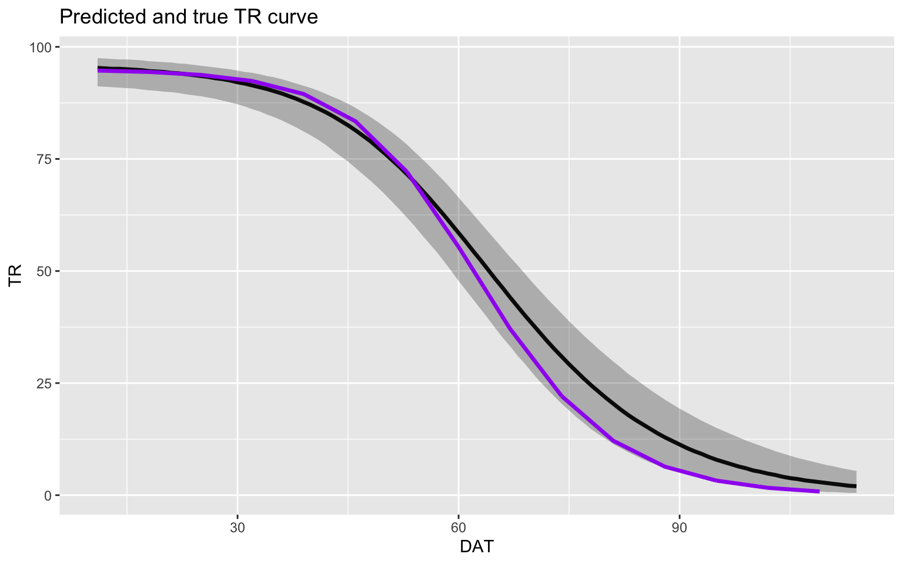
## num [1:6000, 1:600] 5 24 19 5 4 24 17 12 10 9 ...
## - attr(*, "dimnames")=List of 2
## ..$ : NULL
## ..$ : NULL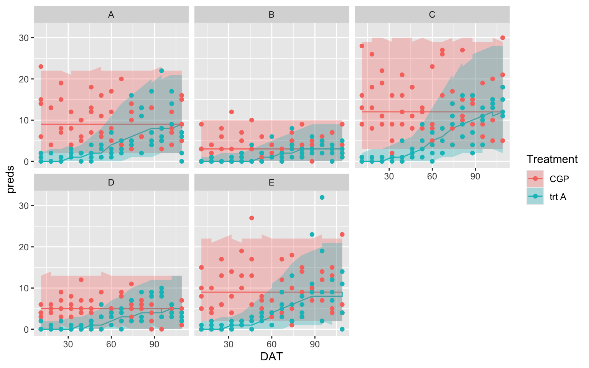
5.3.4 intercept RE, A RE, WITH GP (same for all loc)
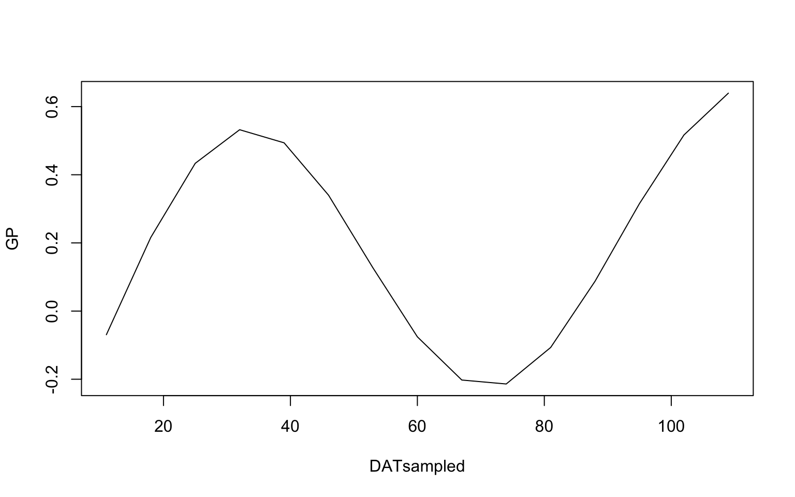
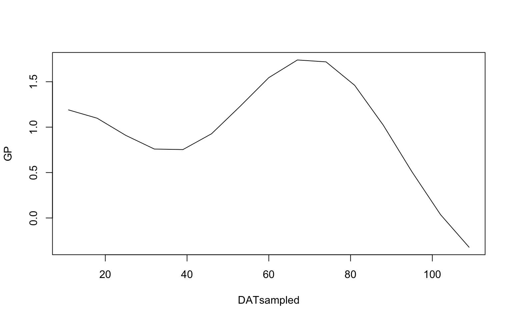
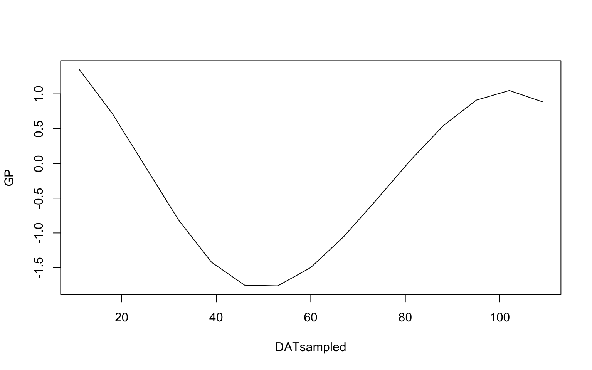
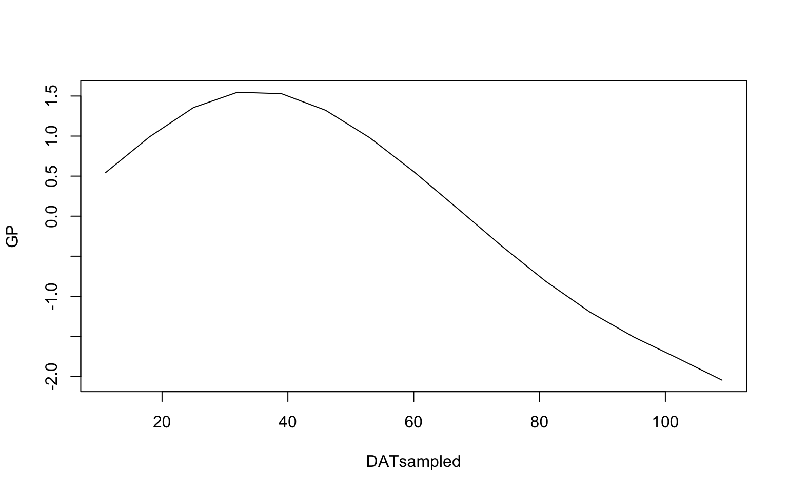
## [1] 0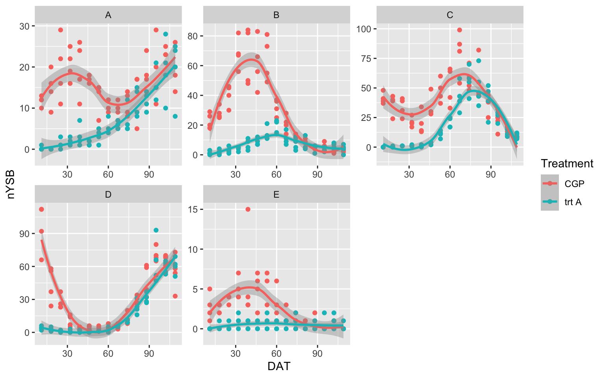
## Family: negbinomial
## Links: mu = log; shape = identity
## Formula: nYSB ~ b0 - (A * (1 - 1/(1 + exp(-1 * B * (DAT - M))))) * numTrt + gpP + log(DaysOfCatch)
## b0 ~ (1 | Location)
## gpP ~ 1 + gp(DAT)
## A ~ 1 + (1 | Location)
## B ~ 1
## M ~ 1
## Data: simdata4 (Number of observations: 600)
## Draws: 6 chains, each with iter = 2000; warmup = 1000; thin = 1;
## total post-warmup draws = 6000
##
## Gaussian Process Hyperparameters:
## Estimate Est.Error l-95% CI u-95% CI Rhat Bulk_ESS Tail_ESS
## sdgp(gpP_gpDAT) 0.51 0.34 0.18 1.35 1.00 3284 3523
## lscale(gpP_gpDAT) 0.25 0.12 0.12 0.49 1.00 1729 2061
##
## Multilevel Hyperparameters:
## ~Location (Number of levels: 5)
## Estimate Est.Error l-95% CI u-95% CI Rhat Bulk_ESS Tail_ESS
## sd(b0_Intercept) 1.68 0.72 0.81 3.59 1.00 3169 3886
## sd(A_Intercept) 1.29 0.63 0.55 2.92 1.00 2315 3297
##
## Regression Coefficients:
## Estimate Est.Error l-95% CI u-95% CI Rhat Bulk_ESS Tail_ESS
## b0_Intercept 0.03 1.98 -3.83 3.87 1.00 6294 3941
## gpP_Intercept 2.69 2.16 -1.54 6.84 1.00 4905 4209
## A_Intercept 2.73 0.64 1.19 3.85 1.00 2492 1617
## B_Intercept 0.16 0.04 0.10 0.24 1.00 4418 4250
## M_Intercept 54.59 2.08 50.13 58.39 1.00 6223 3734
##
## Further Distributional Parameters:
## Estimate Est.Error l-95% CI u-95% CI Rhat Bulk_ESS Tail_ESS
## shape 1.80 0.13 1.55 2.06 1.00 10599 4618
##
## Draws were sampled using sampling(NUTS). For each parameter, Bulk_ESS
## and Tail_ESS are effective sample size measures, and Rhat is the potential
## scale reduction factor on split chains (at convergence, Rhat = 1).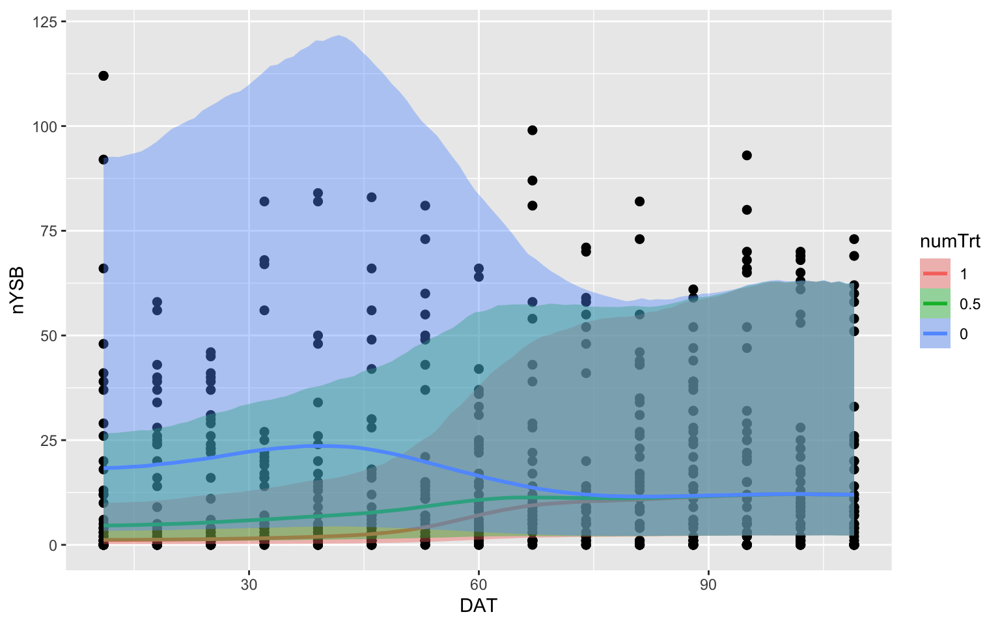
## [1] b_b0_Intercept b_gpP_Intercept
## [3] b_A_Intercept b_B_Intercept
## [5] b_M_Intercept sd_Location__b0_Intercept
## [7] sd_Location__A_Intercept sdgp_gpP_gpDAT
## [9] lscale_gpP_gpDAT shape
## [11] r_Location__b0[A,Intercept] r_Location__b0[B,Intercept]
## [13] r_Location__b0[C,Intercept] r_Location__b0[D,Intercept]
## [15] r_Location__b0[E,Intercept] r_Location__A[A,Intercept]
## [17] r_Location__A[B,Intercept] r_Location__A[C,Intercept]
## [19] r_Location__A[D,Intercept] r_Location__A[E,Intercept]
## [21] zgp_gpP_gpDAT[1] zgp_gpP_gpDAT[2]
## [23] zgp_gpP_gpDAT[3] zgp_gpP_gpDAT[4]
## [25] zgp_gpP_gpDAT[5] zgp_gpP_gpDAT[6]
## [27] zgp_gpP_gpDAT[7] zgp_gpP_gpDAT[8]
## [29] zgp_gpP_gpDAT[9] zgp_gpP_gpDAT[10]
## [31] zgp_gpP_gpDAT[11] zgp_gpP_gpDAT[12]
## [33] zgp_gpP_gpDAT[13] zgp_gpP_gpDAT[14]
## [35] zgp_gpP_gpDAT[15] lprior
## 36 Levels: b_A_Intercept b_B_Intercept b_b0_Intercept ... zgp_gpP_gpDAT[15]## # A tibble: 5 × 2
## Parameter med
## <fct> <dbl>
## 1 r_Location__b0[A,Intercept] 2.77
## 2 r_Location__b0[B,Intercept] 2.99
## 3 r_Location__b0[C,Intercept] 3.73
## 4 r_Location__b0[D,Intercept] 3.61
## 5 r_Location__b0[E,Intercept] 0.549## [1] 2.55 2.76 2.54 3.14 0.26## # A tibble: 5 × 3
## Parameter meddiff med
## <fct> <dbl> <dbl>
## 1 r_Location__A[A,Intercept] 0.342 3.14
## 2 r_Location__A[B,Intercept] -0.763 2.03
## 3 r_Location__A[C,Intercept] 1.12 3.91
## 4 r_Location__A[D,Intercept] 0.938 3.73
## 5 r_Location__A[E,Intercept] -0.619 2.18## [1] 3.22 3.17 4.10 2.83 2.79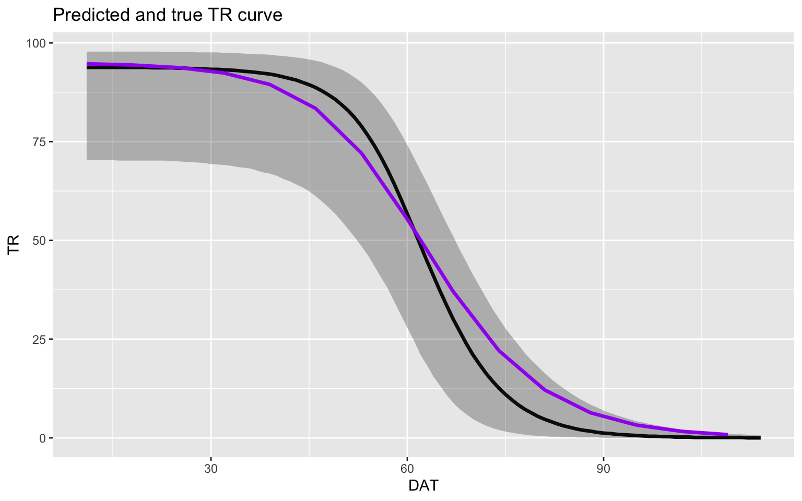
## num [1:6000, 1:600] 41 10 21 9 7 10 19 9 5 36 ...
## - attr(*, "dimnames")=List of 2
## ..$ : NULL
## ..$ : NULL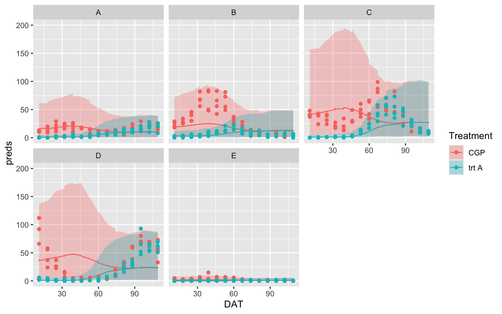
5.3.5 intercept, A RE, with GP (DIFF for each loc)
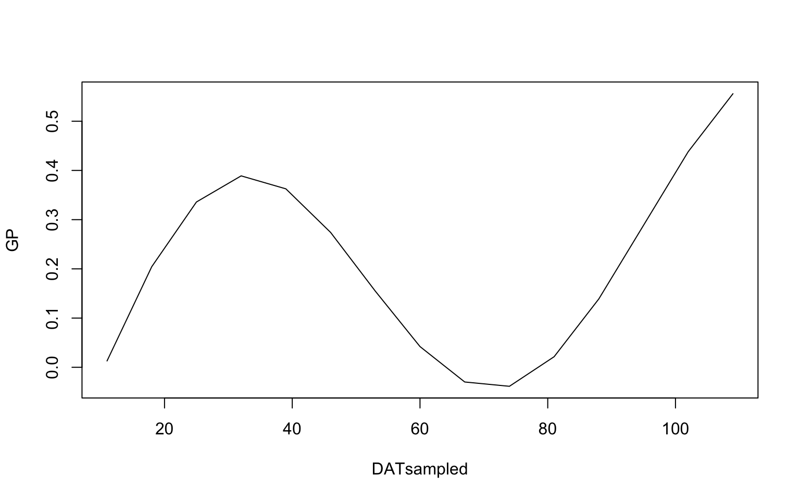
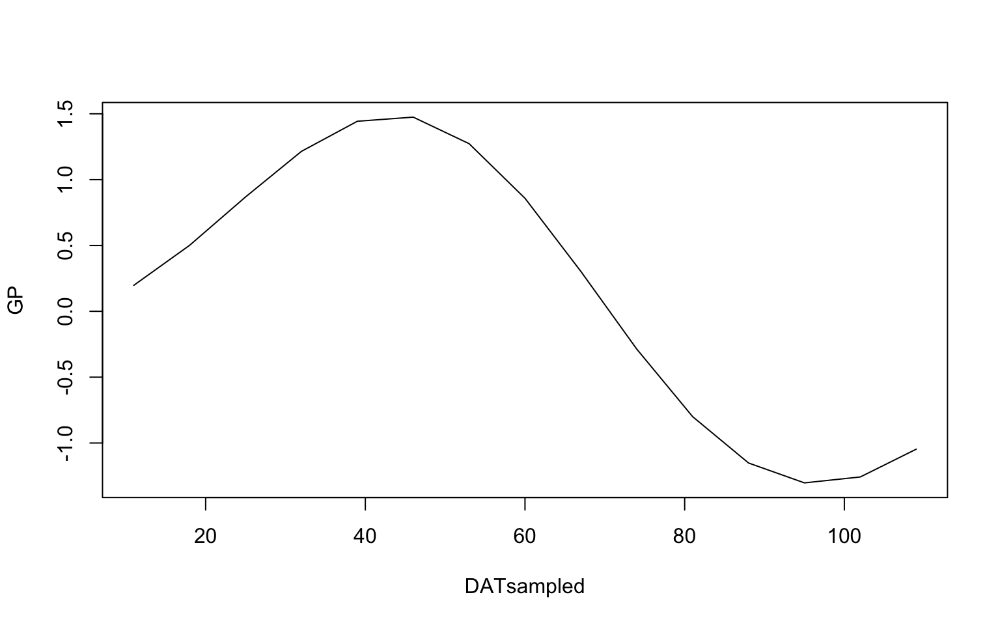
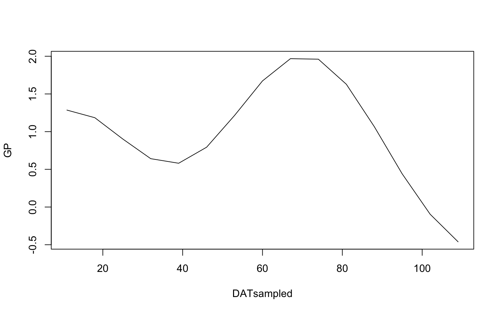
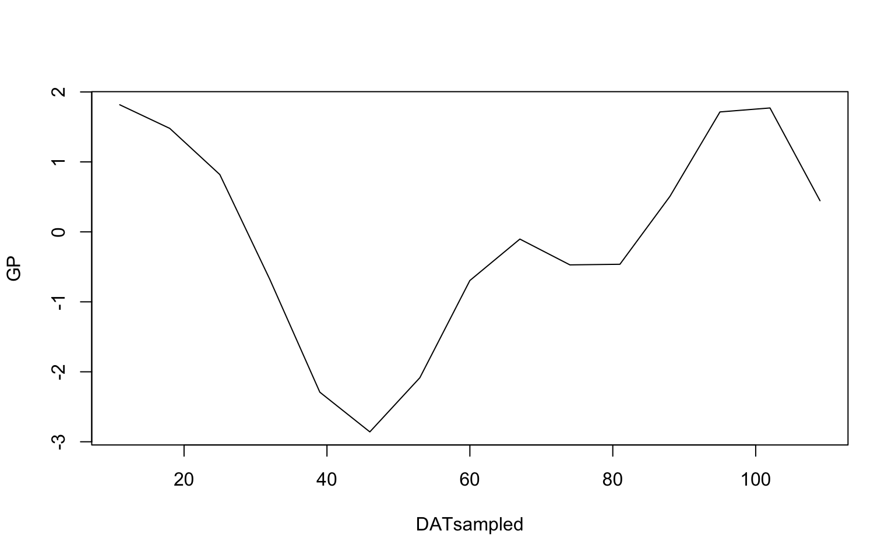
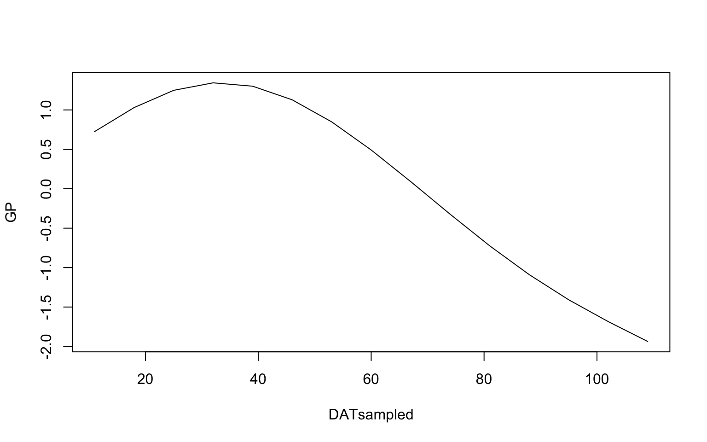
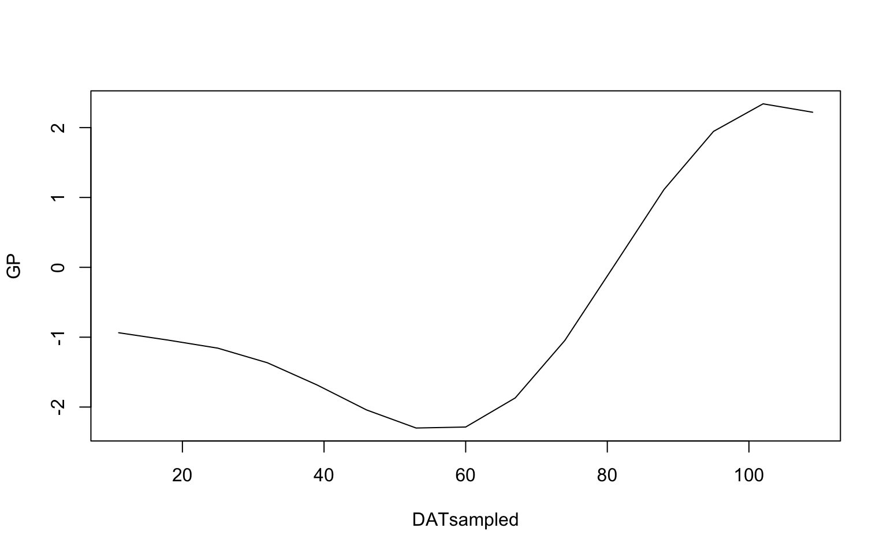
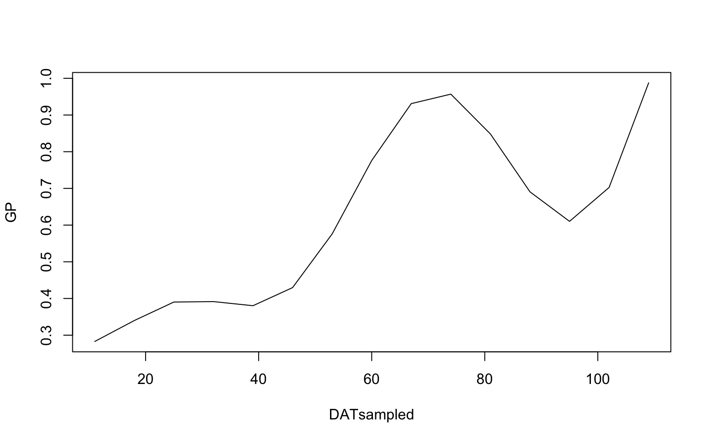
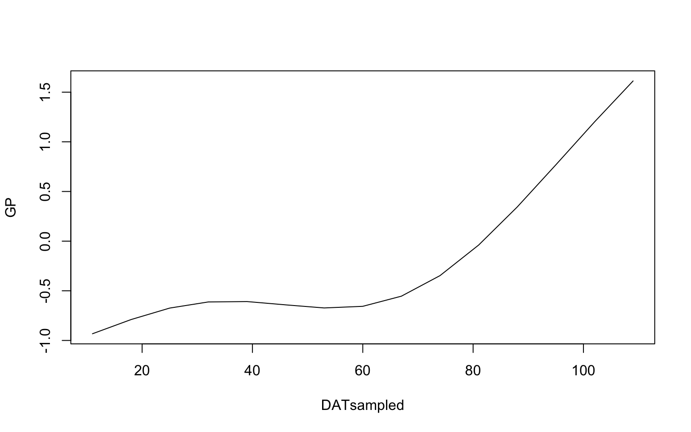
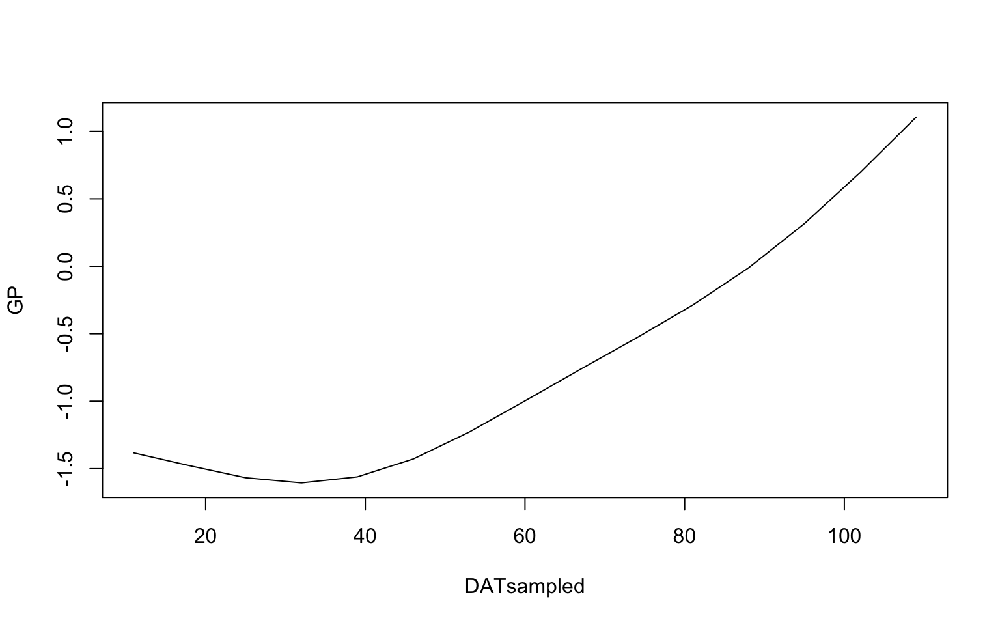
## [1] 0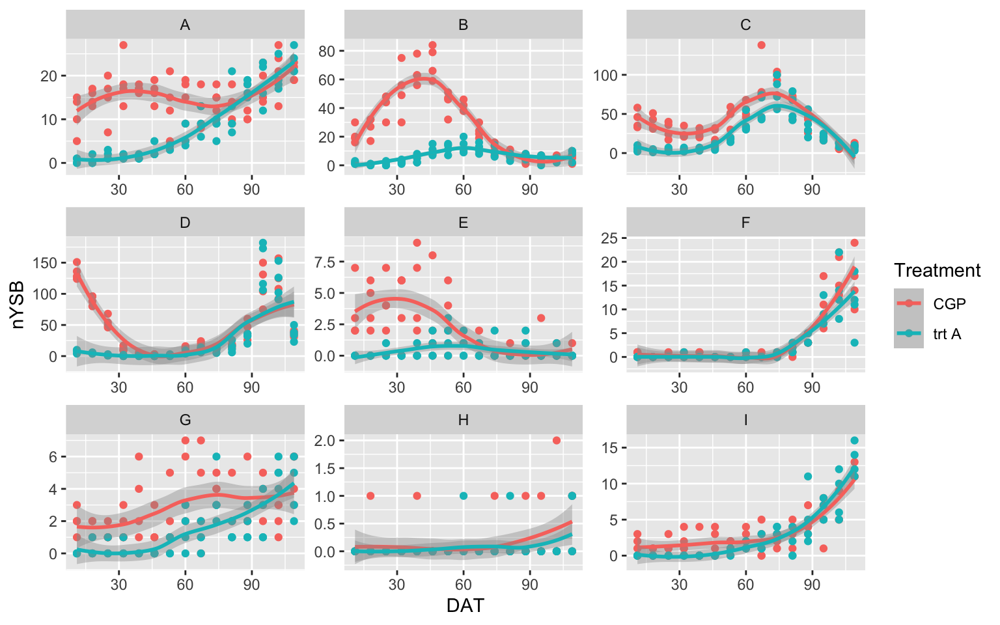
## Family: negbinomial
## Links: mu = log; shape = identity
## Formula: nYSB ~ b0 - (A * (1 - 1/(1 + exp(-1 * B * (DAT - M))))) * numTrt + gpP + log(DaysOfCatch)
## b0 ~ (1 | Location)
## gpP ~ 1 + gp(DAT, by = Location)
## A ~ 1 + (1 | Location)
## B ~ 1
## M ~ 1
## Data: simdata4 (Number of observations: 600)
## Draws: 6 chains, each with iter = 2000; warmup = 1000; thin = 1;
## total post-warmup draws = 6000
##
## Gaussian Process Hyperparameters:
## Estimate Est.Error l-95% CI u-95% CI Rhat Bulk_ESS
## sdgp(gpP_gpDATLocationA) 0.55 0.32 0.21 1.40 1.00 2255
## sdgp(gpP_gpDATLocationB) 1.31 0.61 0.64 2.81 1.00 3708
## sdgp(gpP_gpDATLocationC) 1.10 0.53 0.50 2.43 1.00 2479
## sdgp(gpP_gpDATLocationD) 1.85 0.92 0.85 4.25 1.00 2473
## sdgp(gpP_gpDATLocationE) 2.06 1.23 0.73 5.08 1.00 2169
## lscale(gpP_gpDATLocationA) 0.20 0.06 0.11 0.33 1.00 2057
## lscale(gpP_gpDATLocationB) 0.29 0.06 0.18 0.42 1.00 2455
## lscale(gpP_gpDATLocationC) 0.23 0.06 0.13 0.36 1.00 1392
## lscale(gpP_gpDATLocationD) 0.29 0.06 0.18 0.42 1.00 1899
## lscale(gpP_gpDATLocationE) 0.34 0.10 0.18 0.59 1.00 2387
## Tail_ESS
## sdgp(gpP_gpDATLocationA) 3557
## sdgp(gpP_gpDATLocationB) 4034
## sdgp(gpP_gpDATLocationC) 3668
## sdgp(gpP_gpDATLocationD) 3392
## sdgp(gpP_gpDATLocationE) 3985
## lscale(gpP_gpDATLocationA) 3333
## lscale(gpP_gpDATLocationB) 3431
## lscale(gpP_gpDATLocationC) 2359
## lscale(gpP_gpDATLocationD) 2901
## lscale(gpP_gpDATLocationE) 3392
##
## Multilevel Hyperparameters:
## ~Location (Number of levels: 5)
## Estimate Est.Error l-95% CI u-95% CI Rhat Bulk_ESS Tail_ESS
## sd(b0_Intercept) 0.94 0.80 0.03 2.92 1.00 1693 3031
## sd(A_Intercept) 0.52 0.36 0.10 1.49 1.00 1917 2353
##
## Regression Coefficients:
## Estimate Est.Error l-95% CI u-95% CI Rhat Bulk_ESS Tail_ESS
## b0_Intercept 0.03 1.97 -3.82 3.96 1.00 6805 4546
## gpP_Intercept 2.54 2.12 -1.74 6.65 1.00 6020 4856
## A_Intercept 3.36 0.35 2.63 4.05 1.00 3141 2182
## B_Intercept 0.10 0.01 0.08 0.12 1.00 6275 4499
## M_Intercept 48.21 2.18 43.30 51.93 1.00 5961 4202
##
## Further Distributional Parameters:
## Estimate Est.Error l-95% CI u-95% CI Rhat Bulk_ESS Tail_ESS
## shape 28.51 4.64 20.77 38.82 1.00 10723 4357
##
## Draws were sampled using sampling(NUTS). For each parameter, Bulk_ESS
## and Tail_ESS are effective sample size measures, and Rhat is the potential
## scale reduction factor on split chains (at convergence, Rhat = 1).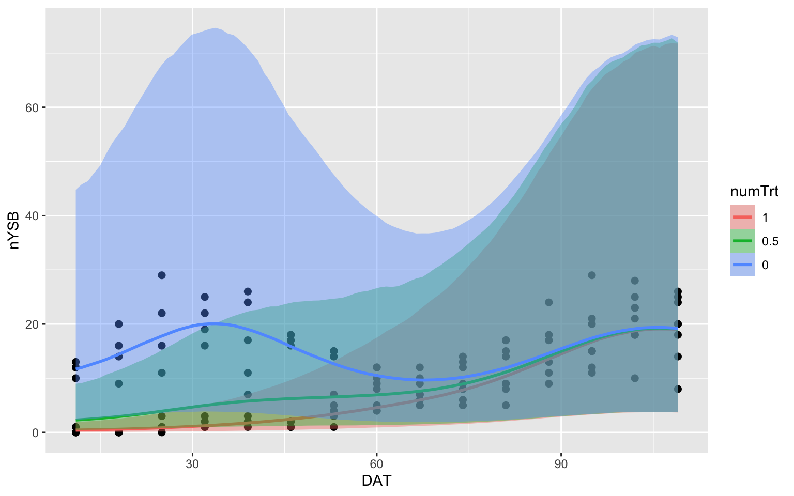
## [1] b_b0_Intercept b_gpP_Intercept
## [3] b_A_Intercept b_B_Intercept
## [5] b_M_Intercept sd_Location__b0_Intercept
## [7] sd_Location__A_Intercept sdgp_gpP_gpDATLocationA
## [9] sdgp_gpP_gpDATLocationB sdgp_gpP_gpDATLocationC
## [11] sdgp_gpP_gpDATLocationD sdgp_gpP_gpDATLocationE
## [13] lscale_gpP_gpDATLocationA lscale_gpP_gpDATLocationB
## [15] lscale_gpP_gpDATLocationC lscale_gpP_gpDATLocationD
## [17] lscale_gpP_gpDATLocationE shape
## [19] r_Location__b0[A,Intercept] r_Location__b0[B,Intercept]
## [21] r_Location__b0[C,Intercept] r_Location__b0[D,Intercept]
## [23] r_Location__b0[E,Intercept] r_Location__A[A,Intercept]
## [25] r_Location__A[B,Intercept] r_Location__A[C,Intercept]
## [27] r_Location__A[D,Intercept] r_Location__A[E,Intercept]
## [29] zgp_gpP_gpDATLocationA[1] zgp_gpP_gpDATLocationA[2]
## [31] zgp_gpP_gpDATLocationA[3] zgp_gpP_gpDATLocationA[4]
## [33] zgp_gpP_gpDATLocationA[5] zgp_gpP_gpDATLocationA[6]
## [35] zgp_gpP_gpDATLocationA[7] zgp_gpP_gpDATLocationA[8]
## [37] zgp_gpP_gpDATLocationA[9] zgp_gpP_gpDATLocationA[10]
## [39] zgp_gpP_gpDATLocationA[11] zgp_gpP_gpDATLocationA[12]
## [41] zgp_gpP_gpDATLocationA[13] zgp_gpP_gpDATLocationA[14]
## [43] zgp_gpP_gpDATLocationA[15] zgp_gpP_gpDATLocationB[1]
## [45] zgp_gpP_gpDATLocationB[2] zgp_gpP_gpDATLocationB[3]
## [47] zgp_gpP_gpDATLocationB[4] zgp_gpP_gpDATLocationB[5]
## [49] zgp_gpP_gpDATLocationB[6] zgp_gpP_gpDATLocationB[7]
## [51] zgp_gpP_gpDATLocationB[8] zgp_gpP_gpDATLocationB[9]
## [53] zgp_gpP_gpDATLocationB[10] zgp_gpP_gpDATLocationB[11]
## [55] zgp_gpP_gpDATLocationB[12] zgp_gpP_gpDATLocationB[13]
## [57] zgp_gpP_gpDATLocationB[14] zgp_gpP_gpDATLocationB[15]
## [59] zgp_gpP_gpDATLocationC[1] zgp_gpP_gpDATLocationC[2]
## [61] zgp_gpP_gpDATLocationC[3] zgp_gpP_gpDATLocationC[4]
## [63] zgp_gpP_gpDATLocationC[5] zgp_gpP_gpDATLocationC[6]
## [65] zgp_gpP_gpDATLocationC[7] zgp_gpP_gpDATLocationC[8]
## [67] zgp_gpP_gpDATLocationC[9] zgp_gpP_gpDATLocationC[10]
## [69] zgp_gpP_gpDATLocationC[11] zgp_gpP_gpDATLocationC[12]
## [71] zgp_gpP_gpDATLocationC[13] zgp_gpP_gpDATLocationC[14]
## [73] zgp_gpP_gpDATLocationC[15] zgp_gpP_gpDATLocationD[1]
## [75] zgp_gpP_gpDATLocationD[2] zgp_gpP_gpDATLocationD[3]
## [77] zgp_gpP_gpDATLocationD[4] zgp_gpP_gpDATLocationD[5]
## [79] zgp_gpP_gpDATLocationD[6] zgp_gpP_gpDATLocationD[7]
## [81] zgp_gpP_gpDATLocationD[8] zgp_gpP_gpDATLocationD[9]
## [83] zgp_gpP_gpDATLocationD[10] zgp_gpP_gpDATLocationD[11]
## [85] zgp_gpP_gpDATLocationD[12] zgp_gpP_gpDATLocationD[13]
## [87] zgp_gpP_gpDATLocationD[14] zgp_gpP_gpDATLocationD[15]
## [89] zgp_gpP_gpDATLocationE[1] zgp_gpP_gpDATLocationE[2]
## [91] zgp_gpP_gpDATLocationE[3] zgp_gpP_gpDATLocationE[4]
## [93] zgp_gpP_gpDATLocationE[5] zgp_gpP_gpDATLocationE[6]
## [95] zgp_gpP_gpDATLocationE[7] zgp_gpP_gpDATLocationE[8]
## [97] zgp_gpP_gpDATLocationE[9] zgp_gpP_gpDATLocationE[10]
## [99] zgp_gpP_gpDATLocationE[11] zgp_gpP_gpDATLocationE[12]
## [101] zgp_gpP_gpDATLocationE[13] zgp_gpP_gpDATLocationE[14]
## [103] zgp_gpP_gpDATLocationE[15] lprior
## 104 Levels: b_A_Intercept b_B_Intercept b_b0_Intercept ... zgp_gpP_gpDATLocationE[15]## # A tibble: 5 × 2
## Parameter med
## <fct> <dbl>
## 1 r_Location__b0[A,Intercept] 2.59
## 2 r_Location__b0[B,Intercept] 2.58
## 3 r_Location__b0[C,Intercept] 2.82
## 4 r_Location__b0[D,Intercept] 2.74
## 5 r_Location__b0[E,Intercept] 2.02## [1] 2.55 2.76 2.54 3.14 0.26 0.34 0.50 -2.31 1.52## # A tibble: 5 × 3
## Parameter meddiff med
## <fct> <dbl> <dbl>
## 1 r_Location__A[A,Intercept] -0.0134 3.35
## 2 r_Location__A[B,Intercept] -0.0987 3.27
## 3 r_Location__A[C,Intercept] 0.526 3.89
## 4 r_Location__A[D,Intercept] -0.128 3.24
## 5 r_Location__A[E,Intercept] -0.0374 3.33## [1] 2.79 3.69 2.41 3.18 3.37 1.97 3.73 3.11 2.97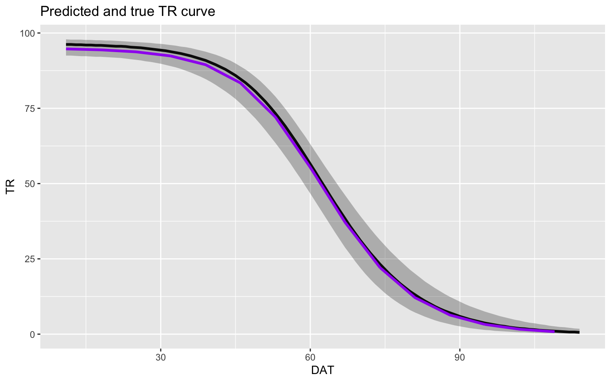
## num [1:6000, 1:600] 13 11 13 10 4 14 5 6 8 23 ...
## - attr(*, "dimnames")=List of 2
## ..$ : NULL
## ..$ : NULL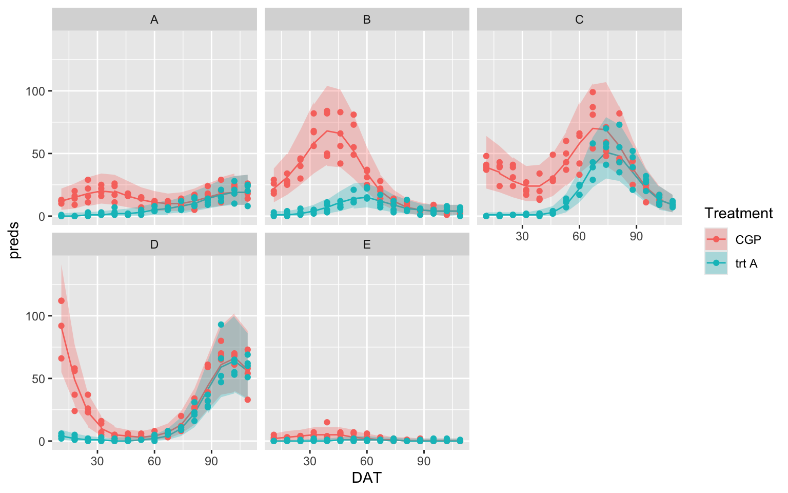
5.3.6 intercept, A, B, M RE, with GP (DIFF for each loc)
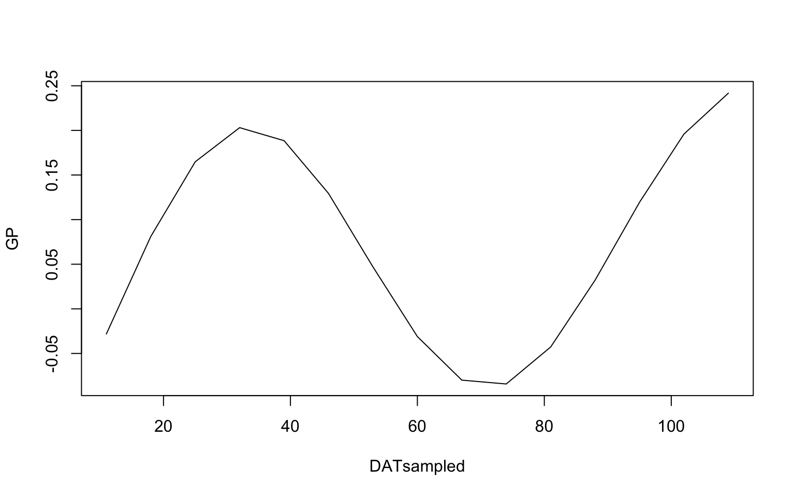
## Family: negbinomial
## Links: mu = log; shape = identity
## Formula: nYSB ~ b0 - (A * (1 - 1/(1 + exp(-1 * B * (DAT - M))))) * numTrt + gpP + log(DaysOfCatch)
## b0 ~ (1 | Location)
## gpP ~ 1 + gp(DAT, by = Location)
## A ~ 1 + (1 | Location)
## B ~ 1 + (1 | Location)
## M ~ 1 + (1 | Location)
## Data: simdata6 (Number of observations: 1080)
## Draws: 6 chains, each with iter = 2000; warmup = 1000; thin = 1;
## total post-warmup draws = 6000
##
## Gaussian Process Hyperparameters:
## Estimate Est.Error l-95% CI u-95% CI Rhat Bulk_ESS
## sdgp(gpP_gpDATLocationA) 0.85 1.11 0.15 3.46 1.01 1133
## sdgp(gpP_gpDATLocationB) 1.88 1.46 0.59 5.49 1.00 2101
## sdgp(gpP_gpDATLocationC) 2.62 1.60 1.00 6.91 1.01 1503
## sdgp(gpP_gpDATLocationD) 2.28 1.61 0.67 6.45 1.00 1679
## sdgp(gpP_gpDATLocationE) 1.57 1.48 0.47 5.14 1.00 1903
## sdgp(gpP_gpDATLocationF) 3.36 2.35 1.14 9.47 1.00 1748
## sdgp(gpP_gpDATLocationG) 0.54 0.67 0.05 2.32 1.00 1713
## sdgp(gpP_gpDATLocationH) 4.28 2.29 1.44 10.12 1.01 1073
## sdgp(gpP_gpDATLocationI) 2.32 1.74 0.77 7.02 1.00 2540
## lscale(gpP_gpDATLocationA) 0.28 0.12 0.11 0.59 1.01 960
## lscale(gpP_gpDATLocationB) 0.39 0.11 0.21 0.65 1.00 1989
## lscale(gpP_gpDATLocationC) 0.22 0.04 0.15 0.30 1.00 1438
## lscale(gpP_gpDATLocationD) 0.36 0.09 0.20 0.57 1.00 1661
## lscale(gpP_gpDATLocationE) 0.31 0.19 0.12 0.78 1.00 964
## lscale(gpP_gpDATLocationF) 0.24 0.06 0.13 0.37 1.00 1352
## lscale(gpP_gpDATLocationG) 0.37 0.32 0.11 1.17 1.00 1766
## lscale(gpP_gpDATLocationH) 0.10 0.02 0.06 0.15 1.01 883
## lscale(gpP_gpDATLocationI) 0.49 0.20 0.20 0.99 1.00 1743
## Tail_ESS
## sdgp(gpP_gpDATLocationA) 1969
## sdgp(gpP_gpDATLocationB) 3643
## sdgp(gpP_gpDATLocationC) 2650
## sdgp(gpP_gpDATLocationD) 2739
## sdgp(gpP_gpDATLocationE) 2729
## sdgp(gpP_gpDATLocationF) 2599
## sdgp(gpP_gpDATLocationG) 2485
## sdgp(gpP_gpDATLocationH) 2603
## sdgp(gpP_gpDATLocationI) 3300
## lscale(gpP_gpDATLocationA) 2218
## lscale(gpP_gpDATLocationB) 2580
## lscale(gpP_gpDATLocationC) 2487
## lscale(gpP_gpDATLocationD) 2488
## lscale(gpP_gpDATLocationE) 2360
## lscale(gpP_gpDATLocationF) 2504
## lscale(gpP_gpDATLocationG) 2840
## lscale(gpP_gpDATLocationH) 1704
## lscale(gpP_gpDATLocationI) 1862
##
## Multilevel Hyperparameters:
## ~Location (Number of levels: 9)
## Estimate Est.Error l-95% CI u-95% CI Rhat Bulk_ESS Tail_ESS
## sd(b0_Intercept) 1.41 0.68 0.28 2.99 1.00 1195 856
## sd(A_Intercept) 1.62 0.73 0.63 3.41 1.00 1928 2638
## sd(B_Intercept) 0.02 0.02 0.00 0.06 1.00 2302 2818
## sd(M_Intercept) 3.41 2.37 0.16 9.00 1.00 2239 3196
##
## Regression Coefficients:
## Estimate Est.Error l-95% CI u-95% CI Rhat Bulk_ESS Tail_ESS
## b0_Intercept -0.00 2.01 -3.98 3.87 1.00 4904 4173
## gpP_Intercept 1.45 2.12 -2.65 5.63 1.00 4049 4255
## A_Intercept 3.14 0.61 1.84 4.36 1.01 1653 1864
## B_Intercept 0.10 0.02 0.08 0.15 1.00 3472 2746
## M_Intercept 43.30 2.97 36.74 48.40 1.00 4145 3163
##
## Further Distributional Parameters:
## Estimate Est.Error l-95% CI u-95% CI Rhat Bulk_ESS Tail_ESS
## shape 30.88 5.40 21.93 43.23 1.00 9466 4391
##
## Draws were sampled using sampling(NUTS). For each parameter, Bulk_ESS
## and Tail_ESS are effective sample size measures, and Rhat is the potential
## scale reduction factor on split chains (at convergence, Rhat = 1).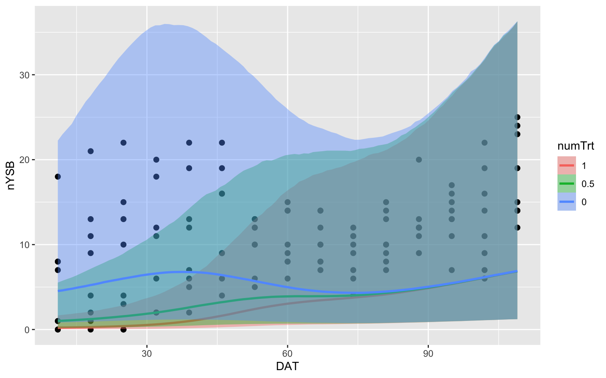
## [1] b_b0_Intercept b_gpP_Intercept
## [3] b_A_Intercept b_B_Intercept
## [5] b_M_Intercept sd_Location__b0_Intercept
## [7] sd_Location__A_Intercept sd_Location__B_Intercept
## [9] sd_Location__M_Intercept sdgp_gpP_gpDATLocationA
## [11] sdgp_gpP_gpDATLocationB sdgp_gpP_gpDATLocationC
## [13] sdgp_gpP_gpDATLocationD sdgp_gpP_gpDATLocationE
## [15] sdgp_gpP_gpDATLocationF sdgp_gpP_gpDATLocationG
## [17] sdgp_gpP_gpDATLocationH sdgp_gpP_gpDATLocationI
## [19] lscale_gpP_gpDATLocationA lscale_gpP_gpDATLocationB
## [21] lscale_gpP_gpDATLocationC lscale_gpP_gpDATLocationD
## [23] lscale_gpP_gpDATLocationE lscale_gpP_gpDATLocationF
## [25] lscale_gpP_gpDATLocationG lscale_gpP_gpDATLocationH
## [27] lscale_gpP_gpDATLocationI shape
## [29] r_Location__b0[A,Intercept] r_Location__b0[B,Intercept]
## [31] r_Location__b0[C,Intercept] r_Location__b0[D,Intercept]
## [33] r_Location__b0[E,Intercept] r_Location__b0[F,Intercept]
## [35] r_Location__b0[G,Intercept] r_Location__b0[H,Intercept]
## [37] r_Location__b0[I,Intercept] r_Location__A[A,Intercept]
## [39] r_Location__A[B,Intercept] r_Location__A[C,Intercept]
## [41] r_Location__A[D,Intercept] r_Location__A[E,Intercept]
## [43] r_Location__A[F,Intercept] r_Location__A[G,Intercept]
## [45] r_Location__A[H,Intercept] r_Location__A[I,Intercept]
## [47] r_Location__B[A,Intercept] r_Location__B[B,Intercept]
## [49] r_Location__B[C,Intercept] r_Location__B[D,Intercept]
## [51] r_Location__B[E,Intercept] r_Location__B[F,Intercept]
## [53] r_Location__B[G,Intercept] r_Location__B[H,Intercept]
## [55] r_Location__B[I,Intercept] r_Location__M[A,Intercept]
## [57] r_Location__M[B,Intercept] r_Location__M[C,Intercept]
## [59] r_Location__M[D,Intercept] r_Location__M[E,Intercept]
## [61] r_Location__M[F,Intercept] r_Location__M[G,Intercept]
## [63] r_Location__M[H,Intercept] r_Location__M[I,Intercept]
## [65] zgp_gpP_gpDATLocationA[1] zgp_gpP_gpDATLocationA[2]
## [67] zgp_gpP_gpDATLocationA[3] zgp_gpP_gpDATLocationA[4]
## [69] zgp_gpP_gpDATLocationA[5] zgp_gpP_gpDATLocationA[6]
## [71] zgp_gpP_gpDATLocationA[7] zgp_gpP_gpDATLocationA[8]
## [73] zgp_gpP_gpDATLocationA[9] zgp_gpP_gpDATLocationA[10]
## [75] zgp_gpP_gpDATLocationA[11] zgp_gpP_gpDATLocationA[12]
## [77] zgp_gpP_gpDATLocationA[13] zgp_gpP_gpDATLocationA[14]
## [79] zgp_gpP_gpDATLocationA[15] zgp_gpP_gpDATLocationB[1]
## [81] zgp_gpP_gpDATLocationB[2] zgp_gpP_gpDATLocationB[3]
## [83] zgp_gpP_gpDATLocationB[4] zgp_gpP_gpDATLocationB[5]
## [85] zgp_gpP_gpDATLocationB[6] zgp_gpP_gpDATLocationB[7]
## [87] zgp_gpP_gpDATLocationB[8] zgp_gpP_gpDATLocationB[9]
## [89] zgp_gpP_gpDATLocationB[10] zgp_gpP_gpDATLocationB[11]
## [91] zgp_gpP_gpDATLocationB[12] zgp_gpP_gpDATLocationB[13]
## [93] zgp_gpP_gpDATLocationB[14] zgp_gpP_gpDATLocationB[15]
## [95] zgp_gpP_gpDATLocationC[1] zgp_gpP_gpDATLocationC[2]
## [97] zgp_gpP_gpDATLocationC[3] zgp_gpP_gpDATLocationC[4]
## [99] zgp_gpP_gpDATLocationC[5] zgp_gpP_gpDATLocationC[6]
## [101] zgp_gpP_gpDATLocationC[7] zgp_gpP_gpDATLocationC[8]
## [103] zgp_gpP_gpDATLocationC[9] zgp_gpP_gpDATLocationC[10]
## [105] zgp_gpP_gpDATLocationC[11] zgp_gpP_gpDATLocationC[12]
## [107] zgp_gpP_gpDATLocationC[13] zgp_gpP_gpDATLocationC[14]
## [109] zgp_gpP_gpDATLocationC[15] zgp_gpP_gpDATLocationD[1]
## [111] zgp_gpP_gpDATLocationD[2] zgp_gpP_gpDATLocationD[3]
## [113] zgp_gpP_gpDATLocationD[4] zgp_gpP_gpDATLocationD[5]
## [115] zgp_gpP_gpDATLocationD[6] zgp_gpP_gpDATLocationD[7]
## [117] zgp_gpP_gpDATLocationD[8] zgp_gpP_gpDATLocationD[9]
## [119] zgp_gpP_gpDATLocationD[10] zgp_gpP_gpDATLocationD[11]
## [121] zgp_gpP_gpDATLocationD[12] zgp_gpP_gpDATLocationD[13]
## [123] zgp_gpP_gpDATLocationD[14] zgp_gpP_gpDATLocationD[15]
## [125] zgp_gpP_gpDATLocationE[1] zgp_gpP_gpDATLocationE[2]
## [127] zgp_gpP_gpDATLocationE[3] zgp_gpP_gpDATLocationE[4]
## [129] zgp_gpP_gpDATLocationE[5] zgp_gpP_gpDATLocationE[6]
## [131] zgp_gpP_gpDATLocationE[7] zgp_gpP_gpDATLocationE[8]
## [133] zgp_gpP_gpDATLocationE[9] zgp_gpP_gpDATLocationE[10]
## [135] zgp_gpP_gpDATLocationE[11] zgp_gpP_gpDATLocationE[12]
## [137] zgp_gpP_gpDATLocationE[13] zgp_gpP_gpDATLocationE[14]
## [139] zgp_gpP_gpDATLocationE[15] zgp_gpP_gpDATLocationF[1]
## [141] zgp_gpP_gpDATLocationF[2] zgp_gpP_gpDATLocationF[3]
## [143] zgp_gpP_gpDATLocationF[4] zgp_gpP_gpDATLocationF[5]
## [145] zgp_gpP_gpDATLocationF[6] zgp_gpP_gpDATLocationF[7]
## [147] zgp_gpP_gpDATLocationF[8] zgp_gpP_gpDATLocationF[9]
## [149] zgp_gpP_gpDATLocationF[10] zgp_gpP_gpDATLocationF[11]
## [151] zgp_gpP_gpDATLocationF[12] zgp_gpP_gpDATLocationF[13]
## [153] zgp_gpP_gpDATLocationF[14] zgp_gpP_gpDATLocationF[15]
## [155] zgp_gpP_gpDATLocationG[1] zgp_gpP_gpDATLocationG[2]
## [157] zgp_gpP_gpDATLocationG[3] zgp_gpP_gpDATLocationG[4]
## [159] zgp_gpP_gpDATLocationG[5] zgp_gpP_gpDATLocationG[6]
## [161] zgp_gpP_gpDATLocationG[7] zgp_gpP_gpDATLocationG[8]
## [163] zgp_gpP_gpDATLocationG[9] zgp_gpP_gpDATLocationG[10]
## [165] zgp_gpP_gpDATLocationG[11] zgp_gpP_gpDATLocationG[12]
## [167] zgp_gpP_gpDATLocationG[13] zgp_gpP_gpDATLocationG[14]
## [169] zgp_gpP_gpDATLocationG[15] zgp_gpP_gpDATLocationH[1]
## [171] zgp_gpP_gpDATLocationH[2] zgp_gpP_gpDATLocationH[3]
## [173] zgp_gpP_gpDATLocationH[4] zgp_gpP_gpDATLocationH[5]
## [175] zgp_gpP_gpDATLocationH[6] zgp_gpP_gpDATLocationH[7]
## [177] zgp_gpP_gpDATLocationH[8] zgp_gpP_gpDATLocationH[9]
## [179] zgp_gpP_gpDATLocationH[10] zgp_gpP_gpDATLocationH[11]
## [181] zgp_gpP_gpDATLocationH[12] zgp_gpP_gpDATLocationH[13]
## [183] zgp_gpP_gpDATLocationH[14] zgp_gpP_gpDATLocationH[15]
## [185] zgp_gpP_gpDATLocationI[1] zgp_gpP_gpDATLocationI[2]
## [187] zgp_gpP_gpDATLocationI[3] zgp_gpP_gpDATLocationI[4]
## [189] zgp_gpP_gpDATLocationI[5] zgp_gpP_gpDATLocationI[6]
## [191] zgp_gpP_gpDATLocationI[7] zgp_gpP_gpDATLocationI[8]
## [193] zgp_gpP_gpDATLocationI[9] zgp_gpP_gpDATLocationI[10]
## [195] zgp_gpP_gpDATLocationI[11] zgp_gpP_gpDATLocationI[12]
## [197] zgp_gpP_gpDATLocationI[13] zgp_gpP_gpDATLocationI[14]
## [199] zgp_gpP_gpDATLocationI[15] lprior
## 200 Levels: b_A_Intercept b_B_Intercept b_b0_Intercept ... zgp_gpP_gpDATLocationI[15]## # A tibble: 9 × 2
## Parameter med
## <fct> <dbl>
## 1 r_Location__b0[A,Intercept] 2.34
## 2 r_Location__b0[B,Intercept] 2.10
## 3 r_Location__b0[C,Intercept] 2.11
## 4 r_Location__b0[D,Intercept] 2.38
## 5 r_Location__b0[E,Intercept] 0.640
## 6 r_Location__b0[F,Intercept] 0.767
## 7 r_Location__b0[G,Intercept] 1.15
## 8 r_Location__b0[H,Intercept] 0.173
## 9 r_Location__b0[I,Intercept] 1.49## [1] 2.55 2.76 2.54 3.14 0.26 0.34 0.50 -2.31 1.52## # A tibble: 9 × 3
## Parameter meddiff med
## <fct> <dbl> <dbl>
## 1 r_Location__A[A,Intercept] -0.699 2.43
## 2 r_Location__A[B,Intercept] 0.822 3.95
## 3 r_Location__A[C,Intercept] -0.920 2.21
## 4 r_Location__A[D,Intercept] 0.153 3.28
## 5 r_Location__A[E,Intercept] 0.935 4.06
## 6 r_Location__A[F,Intercept] -0.573 2.56
## 7 r_Location__A[G,Intercept] 2.25 5.38
## 8 r_Location__A[H,Intercept] 1.01 4.14
## 9 r_Location__A[I,Intercept] -1.19 1.94## [1] 2.79 3.69 2.41 3.18 3.37 1.97 3.73 3.11 2.97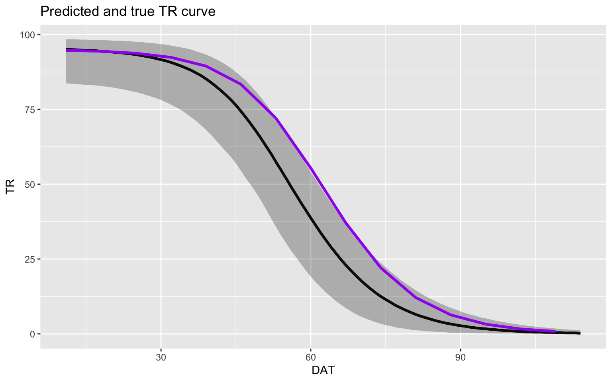
## num [1:6000, 1:1080] 13 3 16 13 8 17 13 12 10 14 ...
## - attr(*, "dimnames")=List of 2
## ..$ : NULL
## ..$ : NULL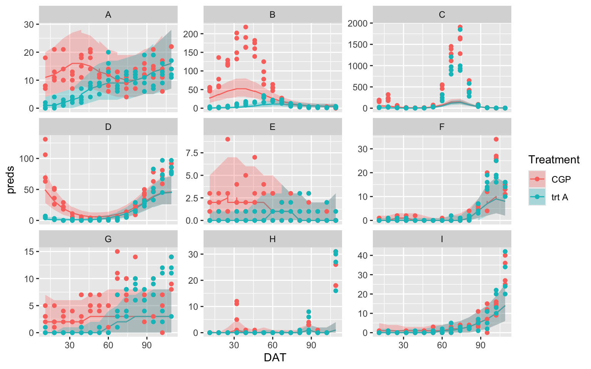
5.4 Model our case study data
Too many divergent warnings with model with intercept, A, B, M RE, with GP (DIFF for each loc). (M was multimodal)
Use constant B, M instead.
## Family: negbinomial
## Links: mu = log; shape = identity
## Formula: nYSB ~ b0 - (A * (1 - 1/(1 + exp(-1 * B * (DAT - M))))) * numTrt + gpP + log(DaysOfCatch)
## b0 ~ (1 | Location)
## gpP ~ 1 + gp(DAT, by = Location)
## A ~ 1 + (1 | Location)
## B ~ 1
## M ~ 1
## Data: datR (Number of observations: 672)
## Draws: 6 chains, each with iter = 2000; warmup = 1000; thin = 1;
## total post-warmup draws = 6000
##
## Gaussian Process Hyperparameters:
## Estimate Est.Error l-95% CI u-95% CI Rhat
## sdgp(gpP_gpDATLocationLoc1) 0.93 0.35 0.47 1.73 1.00
## sdgp(gpP_gpDATLocationLoc10) 1.07 0.44 0.59 2.13 1.00
## sdgp(gpP_gpDATLocationLoc2) 1.47 1.06 0.47 4.29 1.00
## sdgp(gpP_gpDATLocationLoc3) 0.48 0.53 0.07 1.45 1.01
## sdgp(gpP_gpDATLocationLoc4) 0.35 0.79 0.01 2.28 1.00
## sdgp(gpP_gpDATLocationLoc5) 1.47 0.47 0.85 2.68 1.00
## sdgp(gpP_gpDATLocationLoc6) 0.26 0.54 0.01 0.99 1.00
## sdgp(gpP_gpDATLocationLoc7) 1.34 0.38 0.81 2.25 1.00
## sdgp(gpP_gpDATLocationLoc8) 0.58 0.29 0.23 1.25 1.00
## sdgp(gpP_gpDATLocationLoc9) 1.23 0.44 0.66 2.30 1.00
## lscale(gpP_gpDATLocationLoc1) 0.04 0.04 0.01 0.14 1.02
## lscale(gpP_gpDATLocationLoc10) 0.08 0.04 0.04 0.21 1.01
## lscale(gpP_gpDATLocationLoc2) 0.19 0.07 0.11 0.40 1.00
## lscale(gpP_gpDATLocationLoc3) 0.13 0.40 0.03 0.44 1.00
## lscale(gpP_gpDATLocationLoc4) 0.35 0.73 0.04 1.99 1.00
## lscale(gpP_gpDATLocationLoc5) 0.02 0.01 0.01 0.03 1.00
## lscale(gpP_gpDATLocationLoc6) 0.21 0.98 0.02 1.26 1.01
## lscale(gpP_gpDATLocationLoc7) 0.03 0.02 0.01 0.11 1.01
## lscale(gpP_gpDATLocationLoc8) 0.05 0.07 0.01 0.13 1.00
## lscale(gpP_gpDATLocationLoc9) 0.02 0.01 0.01 0.05 1.00
## Bulk_ESS Tail_ESS
## sdgp(gpP_gpDATLocationLoc1) 1752 2221
## sdgp(gpP_gpDATLocationLoc10) 1539 1691
## sdgp(gpP_gpDATLocationLoc2) 1783 3148
## sdgp(gpP_gpDATLocationLoc3) 1441 1544
## sdgp(gpP_gpDATLocationLoc4) 1695 1474
## sdgp(gpP_gpDATLocationLoc5) 1515 2501
## sdgp(gpP_gpDATLocationLoc6) 1821 1375
## sdgp(gpP_gpDATLocationLoc7) 1763 2952
## sdgp(gpP_gpDATLocationLoc8) 1716 2509
## sdgp(gpP_gpDATLocationLoc9) 1298 2562
## lscale(gpP_gpDATLocationLoc1) 332 63
## lscale(gpP_gpDATLocationLoc10) 546 325
## lscale(gpP_gpDATLocationLoc2) 990 1211
## lscale(gpP_gpDATLocationLoc3) 1366 1063
## lscale(gpP_gpDATLocationLoc4) 1877 2003
## lscale(gpP_gpDATLocationLoc5) 2359 3069
## lscale(gpP_gpDATLocationLoc6) 1758 942
## lscale(gpP_gpDATLocationLoc7) 838 321
## lscale(gpP_gpDATLocationLoc8) 2241 1087
## lscale(gpP_gpDATLocationLoc9) 3028 3966
##
## Multilevel Hyperparameters:
## ~Location (Number of levels: 10)
## Estimate Est.Error l-95% CI u-95% CI Rhat Bulk_ESS Tail_ESS
## sd(b0_Intercept) 1.23 0.37 0.70 2.17 1.00 1762 2572
## sd(A_Intercept) 1.43 0.52 0.72 2.73 1.00 1961 3583
##
## Regression Coefficients:
## Estimate Est.Error l-95% CI u-95% CI Rhat Bulk_ESS Tail_ESS
## b0_Intercept 0.01 1.99 -3.87 3.86 1.00 4684 4071
## gpP_Intercept 0.57 2.03 -3.31 4.54 1.00 4083 3621
## A_Intercept 3.59 0.84 2.18 5.41 1.00 2398 3343
## B_Intercept 0.02 0.01 0.01 0.04 1.00 3045 4307
## M_Intercept 51.66 20.52 8.74 85.19 1.00 1933 2625
##
## Further Distributional Parameters:
## Estimate Est.Error l-95% CI u-95% CI Rhat Bulk_ESS Tail_ESS
## shape 5.21 0.61 4.10 6.52 1.00 1249 2707
##
## Draws were sampled using sampling(NUTS). For each parameter, Bulk_ESS
## and Tail_ESS are effective sample size measures, and Rhat is the potential
## scale reduction factor on split chains (at convergence, Rhat = 1).## [1] b_b0_Intercept b_gpP_Intercept
## [3] b_A_Intercept b_B_Intercept
## [5] b_M_Intercept sd_Location__b0_Intercept
## [7] sd_Location__A_Intercept sdgp_gpP_gpDATLocationLoc1
## [9] sdgp_gpP_gpDATLocationLoc10 sdgp_gpP_gpDATLocationLoc2
## [11] sdgp_gpP_gpDATLocationLoc3 sdgp_gpP_gpDATLocationLoc4
## [13] sdgp_gpP_gpDATLocationLoc5 sdgp_gpP_gpDATLocationLoc6
## [15] sdgp_gpP_gpDATLocationLoc7 sdgp_gpP_gpDATLocationLoc8
## [17] sdgp_gpP_gpDATLocationLoc9 lscale_gpP_gpDATLocationLoc1
## [19] lscale_gpP_gpDATLocationLoc10 lscale_gpP_gpDATLocationLoc2
## [21] lscale_gpP_gpDATLocationLoc3 lscale_gpP_gpDATLocationLoc4
## [23] lscale_gpP_gpDATLocationLoc5 lscale_gpP_gpDATLocationLoc6
## [25] lscale_gpP_gpDATLocationLoc7 lscale_gpP_gpDATLocationLoc8
## [27] lscale_gpP_gpDATLocationLoc9 shape
## [29] r_Location__b0[Loc1,Intercept] r_Location__b0[Loc10,Intercept]
## [31] r_Location__b0[Loc2,Intercept] r_Location__b0[Loc3,Intercept]
## [33] r_Location__b0[Loc4,Intercept] r_Location__b0[Loc5,Intercept]
## [35] r_Location__b0[Loc6,Intercept] r_Location__b0[Loc7,Intercept]
## [37] r_Location__b0[Loc8,Intercept] r_Location__b0[Loc9,Intercept]
## [39] r_Location__A[Loc1,Intercept] r_Location__A[Loc10,Intercept]
## [41] r_Location__A[Loc2,Intercept] r_Location__A[Loc3,Intercept]
## [43] r_Location__A[Loc4,Intercept] r_Location__A[Loc5,Intercept]
## [45] r_Location__A[Loc6,Intercept] r_Location__A[Loc7,Intercept]
## [47] r_Location__A[Loc8,Intercept] r_Location__A[Loc9,Intercept]
## [49] zgp_gpP_gpDATLocationLoc1[1] zgp_gpP_gpDATLocationLoc1[2]
## [51] zgp_gpP_gpDATLocationLoc1[3] zgp_gpP_gpDATLocationLoc1[4]
## [53] zgp_gpP_gpDATLocationLoc1[5] zgp_gpP_gpDATLocationLoc1[6]
## [55] zgp_gpP_gpDATLocationLoc1[7] zgp_gpP_gpDATLocationLoc1[8]
## [57] zgp_gpP_gpDATLocationLoc1[9] zgp_gpP_gpDATLocationLoc1[10]
## [59] zgp_gpP_gpDATLocationLoc1[11] zgp_gpP_gpDATLocationLoc1[12]
## [61] zgp_gpP_gpDATLocationLoc1[13] zgp_gpP_gpDATLocationLoc1[14]
## [63] zgp_gpP_gpDATLocationLoc1[15] zgp_gpP_gpDATLocationLoc1[16]
## [65] zgp_gpP_gpDATLocationLoc1[17] zgp_gpP_gpDATLocationLoc1[18]
## [67] zgp_gpP_gpDATLocationLoc1[19] zgp_gpP_gpDATLocationLoc1[20]
## [69] zgp_gpP_gpDATLocationLoc1[21] zgp_gpP_gpDATLocationLoc1[22]
## [71] zgp_gpP_gpDATLocationLoc1[23] zgp_gpP_gpDATLocationLoc1[24]
## [73] zgp_gpP_gpDATLocationLoc10[1] zgp_gpP_gpDATLocationLoc10[2]
## [75] zgp_gpP_gpDATLocationLoc10[3] zgp_gpP_gpDATLocationLoc10[4]
## [77] zgp_gpP_gpDATLocationLoc10[5] zgp_gpP_gpDATLocationLoc10[6]
## [79] zgp_gpP_gpDATLocationLoc10[7] zgp_gpP_gpDATLocationLoc10[8]
## [81] zgp_gpP_gpDATLocationLoc10[9] zgp_gpP_gpDATLocationLoc10[10]
## [83] zgp_gpP_gpDATLocationLoc10[11] zgp_gpP_gpDATLocationLoc10[12]
## [85] zgp_gpP_gpDATLocationLoc10[13] zgp_gpP_gpDATLocationLoc10[14]
## [87] zgp_gpP_gpDATLocationLoc2[1] zgp_gpP_gpDATLocationLoc2[2]
## [89] zgp_gpP_gpDATLocationLoc2[3] zgp_gpP_gpDATLocationLoc2[4]
## [91] zgp_gpP_gpDATLocationLoc2[5] zgp_gpP_gpDATLocationLoc2[6]
## [93] zgp_gpP_gpDATLocationLoc2[7] zgp_gpP_gpDATLocationLoc2[8]
## [95] zgp_gpP_gpDATLocationLoc3[1] zgp_gpP_gpDATLocationLoc3[2]
## [97] zgp_gpP_gpDATLocationLoc3[3] zgp_gpP_gpDATLocationLoc3[4]
## [99] zgp_gpP_gpDATLocationLoc3[5] zgp_gpP_gpDATLocationLoc3[6]
## [101] zgp_gpP_gpDATLocationLoc3[7] zgp_gpP_gpDATLocationLoc3[8]
## [103] zgp_gpP_gpDATLocationLoc3[9] zgp_gpP_gpDATLocationLoc3[10]
## [105] zgp_gpP_gpDATLocationLoc3[11] zgp_gpP_gpDATLocationLoc3[12]
## [107] zgp_gpP_gpDATLocationLoc3[13] zgp_gpP_gpDATLocationLoc3[14]
## [109] zgp_gpP_gpDATLocationLoc3[15] zgp_gpP_gpDATLocationLoc3[16]
## [111] zgp_gpP_gpDATLocationLoc4[1] zgp_gpP_gpDATLocationLoc4[2]
## [113] zgp_gpP_gpDATLocationLoc4[3] zgp_gpP_gpDATLocationLoc4[4]
## [115] zgp_gpP_gpDATLocationLoc4[5] zgp_gpP_gpDATLocationLoc4[6]
## [117] zgp_gpP_gpDATLocationLoc4[7] zgp_gpP_gpDATLocationLoc4[8]
## [119] zgp_gpP_gpDATLocationLoc4[9] zgp_gpP_gpDATLocationLoc4[10]
## [121] zgp_gpP_gpDATLocationLoc4[11] zgp_gpP_gpDATLocationLoc4[12]
## [123] zgp_gpP_gpDATLocationLoc4[13] zgp_gpP_gpDATLocationLoc4[14]
## [125] zgp_gpP_gpDATLocationLoc4[15] zgp_gpP_gpDATLocationLoc4[16]
## [127] zgp_gpP_gpDATLocationLoc4[17] zgp_gpP_gpDATLocationLoc4[18]
## [129] zgp_gpP_gpDATLocationLoc4[19] zgp_gpP_gpDATLocationLoc4[20]
## [131] zgp_gpP_gpDATLocationLoc5[1] zgp_gpP_gpDATLocationLoc5[2]
## [133] zgp_gpP_gpDATLocationLoc5[3] zgp_gpP_gpDATLocationLoc5[4]
## [135] zgp_gpP_gpDATLocationLoc5[5] zgp_gpP_gpDATLocationLoc5[6]
## [137] zgp_gpP_gpDATLocationLoc5[7] zgp_gpP_gpDATLocationLoc5[8]
## [139] zgp_gpP_gpDATLocationLoc5[9] zgp_gpP_gpDATLocationLoc5[10]
## [141] zgp_gpP_gpDATLocationLoc5[11] zgp_gpP_gpDATLocationLoc5[12]
## [143] zgp_gpP_gpDATLocationLoc5[13] zgp_gpP_gpDATLocationLoc5[14]
## [145] zgp_gpP_gpDATLocationLoc5[15] zgp_gpP_gpDATLocationLoc6[1]
## [147] zgp_gpP_gpDATLocationLoc6[2] zgp_gpP_gpDATLocationLoc6[3]
## [149] zgp_gpP_gpDATLocationLoc6[4] zgp_gpP_gpDATLocationLoc6[5]
## [151] zgp_gpP_gpDATLocationLoc6[6] zgp_gpP_gpDATLocationLoc6[7]
## [153] zgp_gpP_gpDATLocationLoc6[8] zgp_gpP_gpDATLocationLoc6[9]
## [155] zgp_gpP_gpDATLocationLoc6[10] zgp_gpP_gpDATLocationLoc6[11]
## [157] zgp_gpP_gpDATLocationLoc6[12] zgp_gpP_gpDATLocationLoc6[13]
## [159] zgp_gpP_gpDATLocationLoc6[14] zgp_gpP_gpDATLocationLoc6[15]
## [161] zgp_gpP_gpDATLocationLoc6[16] zgp_gpP_gpDATLocationLoc7[1]
## [163] zgp_gpP_gpDATLocationLoc7[2] zgp_gpP_gpDATLocationLoc7[3]
## [165] zgp_gpP_gpDATLocationLoc7[4] zgp_gpP_gpDATLocationLoc7[5]
## [167] zgp_gpP_gpDATLocationLoc7[6] zgp_gpP_gpDATLocationLoc7[7]
## [169] zgp_gpP_gpDATLocationLoc7[8] zgp_gpP_gpDATLocationLoc7[9]
## [171] zgp_gpP_gpDATLocationLoc7[10] zgp_gpP_gpDATLocationLoc7[11]
## [173] zgp_gpP_gpDATLocationLoc7[12] zgp_gpP_gpDATLocationLoc7[13]
## [175] zgp_gpP_gpDATLocationLoc7[14] zgp_gpP_gpDATLocationLoc7[15]
## [177] zgp_gpP_gpDATLocationLoc7[16] zgp_gpP_gpDATLocationLoc7[17]
## [179] zgp_gpP_gpDATLocationLoc8[1] zgp_gpP_gpDATLocationLoc8[2]
## [181] zgp_gpP_gpDATLocationLoc8[3] zgp_gpP_gpDATLocationLoc8[4]
## [183] zgp_gpP_gpDATLocationLoc8[5] zgp_gpP_gpDATLocationLoc8[6]
## [185] zgp_gpP_gpDATLocationLoc8[7] zgp_gpP_gpDATLocationLoc8[8]
## [187] zgp_gpP_gpDATLocationLoc8[9] zgp_gpP_gpDATLocationLoc8[10]
## [189] zgp_gpP_gpDATLocationLoc8[11] zgp_gpP_gpDATLocationLoc8[12]
## [191] zgp_gpP_gpDATLocationLoc8[13] zgp_gpP_gpDATLocationLoc8[14]
## [193] zgp_gpP_gpDATLocationLoc8[15] zgp_gpP_gpDATLocationLoc9[1]
## [195] zgp_gpP_gpDATLocationLoc9[2] zgp_gpP_gpDATLocationLoc9[3]
## [197] zgp_gpP_gpDATLocationLoc9[4] zgp_gpP_gpDATLocationLoc9[5]
## [199] zgp_gpP_gpDATLocationLoc9[6] zgp_gpP_gpDATLocationLoc9[7]
## [201] zgp_gpP_gpDATLocationLoc9[8] zgp_gpP_gpDATLocationLoc9[9]
## [203] zgp_gpP_gpDATLocationLoc9[10] zgp_gpP_gpDATLocationLoc9[11]
## [205] zgp_gpP_gpDATLocationLoc9[12] zgp_gpP_gpDATLocationLoc9[13]
## [207] zgp_gpP_gpDATLocationLoc9[14] lprior
## 208 Levels: b_A_Intercept b_B_Intercept b_b0_Intercept ... zgp_gpP_gpDATLocationLoc9[14]## # A tibble: 10 × 2
## Parameter med
## <fct> <dbl>
## 1 r_Location__b0[Loc1,Intercept] 0.849
## 2 r_Location__b0[Loc10,Intercept] 1.87
## 3 r_Location__b0[Loc2,Intercept] 1.46
## 4 r_Location__b0[Loc3,Intercept] -0.187
## 5 r_Location__b0[Loc4,Intercept] -0.975
## 6 r_Location__b0[Loc5,Intercept] 0.213
## 7 r_Location__b0[Loc6,Intercept] -0.249
## 8 r_Location__b0[Loc7,Intercept] 1.14
## 9 r_Location__b0[Loc8,Intercept] -0.238
## 10 r_Location__b0[Loc9,Intercept] 1.96## # A tibble: 10 × 3
## Parameter meddiff med
## <fct> <dbl> <dbl>
## 1 r_Location__A[Loc1,Intercept] -0.0635 3.42
## 2 r_Location__A[Loc10,Intercept] 0.203 3.69
## 3 r_Location__A[Loc2,Intercept] 2.73 6.22
## 4 r_Location__A[Loc3,Intercept] -0.777 2.71
## 5 r_Location__A[Loc4,Intercept] -0.0814 3.40
## 6 r_Location__A[Loc5,Intercept] 0.583 4.07
## 7 r_Location__A[Loc6,Intercept] -0.609 2.88
## 8 r_Location__A[Loc7,Intercept] 0.921 4.41
## 9 r_Location__A[Loc8,Intercept] -1.45 2.04
## 10 r_Location__A[Loc9,Intercept] 0.429 3.91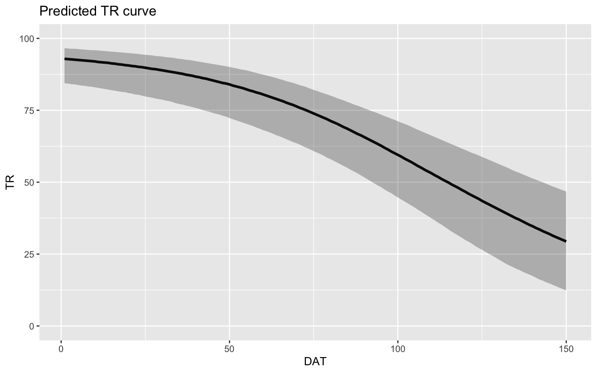
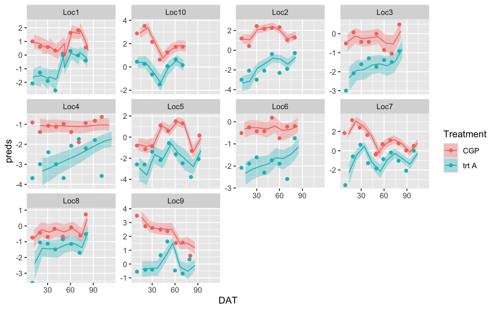